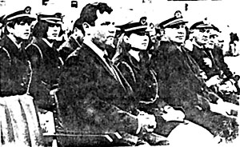

III. PALMY DAYS
|
"The guests are met, the feast is set. May’st hear the merry din." ("The Ancient Mariner", S. T. Coleridge 1772-1834) |
|
"The guests are met, the feast is set. May’st hear the merry din." ("The Ancient Mariner", S. T. Coleridge 1772-1834) |
When it was felt that the Corfiots had been suitably indoctrinated into the greatness of Hubbard's image, his disciples reckoned that the time was ripe for the deity (who had not, as yet, stepped foot ashore) to be launched in public.
The director of Baron von Richthoeffen's casino was persuaded that it would be an excellent publicity stunt to get in on the act. Accordingly, he agreed to lay down the red carpet for the occasion and El Ron became the most honoured guest to receive Teutonic hospitality at the Achillion Palace since Kaiser Bill's ownership at the beginning of the century.
News of the event sent Alexander Mitchell of the "Sunday Times" post-haste to Corfu. Mitchell was an old hand at exposing the exploits of the scientologists and had been a thorn in their religion for the past few years and no doubt they were half expecting him to turn up.
In any event we were lunching at a remote taverna when a taxi pulled up and two "tourists" emerged who sat down at an adjacent table and whom Mitchell pointed out to me as two of Hubbard's thugs evidently detailed off to tail him. One was alleged to be a British professional boxer rejoicing in the improbable name of Neville Chamberlain and the other an American judo expert named Frank Friedman.
Alexander Mitchell's subsequent story, entitled "Over the side go the erring Scientologists" (referring to the custom of throwing reprobate students into the sea in the early morning) made headline news in the 17th November, the same day as the memorable christening ceremony of the "Apollo" which we shall shortly be attending. This article, which included a scathing account of the scientologists' less savoury practices on the ship brought about two predictable results.
Firstly, the Colonels sent their security experts to check on the ship. They appeared satisfied with the clean bill of health certified by the Harbourmaster, whom Reuter later quoted as saying, "they are harmless people who abide by the laws of Greece and give us no trouble. I have seen people being tossed into the sea but they have told me this is part of their training course."
The second sequel was a solicitor's letter to the "Sunday Times" from Messrs. Lawrence Alkin & Co., acting for the Church of Scientology, claiming that "to suggest that our clients behave in an improper or violent way towards their members is grossly defamatory and seriously injuries their reputation," and demanding certain remedies forthwith.
There was also a third and far reaching repercussion; but let us first return to the Achillion Palace where El Ron is about to tread the specially laid out red carpet as he attends the lavish reception given in his honour. Amongst the guests, all arrayed in their finest attire, are the inevitable Harbourmaster and leading members of Corfu society (though the principal officials* are still sitting on the fence awaiting a definite lead from the Colonels). The flunkies look particularly impressive in their powdered wigs and fancy dress. The casino is packed to capacity with pilgrims who have come from afar to get a glimpse of the fabulous El Ron who, as he alights from his taxi and enters the casino, is accorded a standing ovation.
* In fact the Prefect Theodore Zissis (also indicted in the writ) remained aloof throughout.
|

|
The following day it is El Ron's turn to shower largesse* upon the Corfiots who are invited to the christening party of the T.S.M.Y. "Apollo" (formerly "Royal Scotman") named after Ancient Greece's God of Sun and Music. As the colourful ceremony with students parading in their nautical uniforms, nears its end Diana Hubbard mounts the rostrum and proclaims, "I christen thee yacht ‘Apollo’," breaking a bottle of champagne on the stern whilst the new gold-painted name is simultaneously uncovered The Commodore then addresses his guests as follows: "I wish to thank you very much' because you are here and because you have honoured us with your presence, O citizens of Corfu, . . . " The guests now repair to the ward room where so the "Ephimiris ton Idisseon" informs us, "a most lavish reception was held. At this reception the senior officers of the ship together with many girl students entertained the locals with much courtesy."
At the same time as the "Royal Scotman" lost her identity, the "Avon River" took on the name "Athena" and the yacht "Enchanter" became "Diana".
No-one seemed to notice that, whilst the Commodore's boast that he had honoured the host country by giving all his ships Greek names, might flatter Greek susceptibilities, it was hardly over-complimentary to advertise at the same time his decision to register these vessels in Panama in preference to placing them under the flag of Greece whose waters were to be their proposed future home.
As we have learnt, the "Telegraph" has already been gagged by the Colonels and the future of Scientology in Corfu seemed secure.
Flushed with success, El Ron could feel well justified in formulating the most ambitious plans with confidence and he now started work on his historic "Manifesto" for the "take-over" of Corfu**.
* The most memorable reception given for the Corfiots, still sheepishly talked about today, was a champagne party which took place on New Year's Night. The Commodore was not on the quarter deck to greet his guests and when by midnight he had not appeared the by now well wined guests started shouting, "We want Hubbard." Whereupon El Ron duly obliged by making a grande entrée heralded by a uniformed page bearing a large glass of gin on a silver salver to the vociferous applause of the assembled gathering.
** A summary of this remarkable "Manifesto" which included the Conversion of the Royal Palace of St. Michael and St. George into a University for Scientology appears in the Appendix on page 47. Distributed to a select committee of 12 Corfiots representing all trade and profession groups, the aim was to persuade the islanders to petition the Colonels through their group leaders to concede that such prosperity as guaranteed for the island by the Church of Scientology could not possibly be ignored.


Last updated 11 January 1997
by Chris Owen (co@nvg.unit.no)